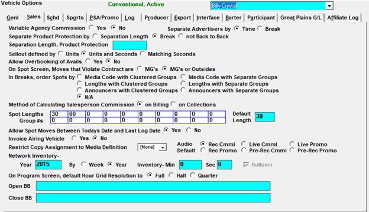

Sales Options

- Variable Agency Commission – Not Implemented
- Separate Advertisers by:
- Time – When “Time” is selected the system uses a formula to determine the miniumum time separation for spots from the same advertiser.
- Break – Will ensure break separation between spots from the same advertiser.
- Important note: These advertiser separation rules only apply to an advertiser when the same product protection code is used for the different contracts for that advertiser (or if the contracts for that advertiser have no product protection code).
- Separate Product Protection by: - This setting will determine how close together spots with the same competitive name can be placed for the same advertiser.
- Separation Length – When time is selected, you must define the minimum time that is allowed for competitive scheduling in the “spearation length, product protection” field.
- Break – Will not allow the same competitive in the same break.
- Not Back to Back – Prevents two spots with the same product protection code from booked being into the same break if they’re the only two spots in the break. (If there are other spots in the break, this setting does not affect the spots with the same product protection code, and it is possible to have two spots with the same product protection code back to back even with this setting selected.)
- Separation Length, Product Protection – When using the “Separation Length” option, use this field to enter the minimum amount of time spots with the same product protection code must be separated by. Several different time formats are allowed. You can use a single digit for the numbers 1 through 24 for hours. You can enter a digit followed by the letter h, m, or s, for hours, minutes, and seconds (example: 1h5m30s for one hour, five minutes, and thirty seconds of separation). You can also use a single quote for minutes and/or a double quote for seconds. (Note that times that are entered using h, m, and s, will be switched to the quote and double quote format when exiting the screen and returning back to it.)
- Sellout defined - This question determines how the spots schedule into the library that is defined in programming
- Units – Unit based vehicle would mean all spots are considered one unit (60’s, 30’s, 120’s, etc.). When the sellout for a vehicle is defined as “unit”, the Avail Reports will only show the unit counts
- Units and Seconds – When using units and seconds, there must be enough time and units available when scheduling spots. For example: If you had a 2 unit 60 second avail (2/60), it could be filled with two 30 second spots or one 60 second spot
- Matching Units – When using matching units, the spots scheduling into the avails must exactly match the avail defined units and seconds. For example: If you had a 1 unit 60 second avail (1/60) no 30 second spots would be allowed to automatically schedule into this avail
- Allow Overbooking of Avails – Allows you to reconcile spots in Post Log without having to find an empty break. On verseion 7.1 and above, this setting also allows avails to be overbooked on the Spots screen (when the “Sellout defined by” setting is set to Units or Units and Seconds) by dragging a spot onto the avail name of a fully booked avail, and dropping it when the “overbook” indicator appears.
- On the Spots Screen, Moves that Violate Contract Are:
- MG’s - will automatically change a spot to be a makegood when it is moved outside ordered days, dates or times for the order
- MG’s or Outsides - will ask a question if the spot should be placed as a makegood
- In Breaks, order Spots by: - Not Implemented
- Method of Calculation Salesperson Commission - Not yet Implemented
- Spot Lengths: Define the spot lengths that this vehicle may have
- Default Length: Define the default that should be used for this vehicle when entering order
- Group #’s: Unused
- Allow Spot Moves Between Today’s Date and Last Log Date - If you close vehicles in the future select “yes”.
- Invoice Airing Vehicle: Not implemented
- Restrict Copy Assignment to Media Definition: Not implemented.
- Audio Default: This setting is used to set the default audio type for this vehicle. Only audio types that are not excluded from the Traffic Site Options setting “Audio type to exclude” are available for selection. To set the default audio type to an audio type other than Recorded Commercial, click the appropriate radio button next to the chosen audio type and save it. This will make that audio type the default for that particular vehicle. (Version 7.1 and above.)
- Network Inventory This feature is designed for Rep vehicles, when airtime is purchased and on the vehicle. By entering values in the year and inventory field, you can keep track of what you have purchased on the Network-Station Report. These values must be updated every year
- Default Hour Grid Resolution – Select the desired hour view for the Programming Screen
- Full will show 12M-12M on one screen
- Half will display every half-hour.
- Quarter will display quarter hour increments for each hour
- On Program Screen, Default Hour Grid Resolution to- This will affect the look of the programming screen
- Open/Close Billboards- You can enter custom Billboard text that will appear before any system generated Open and/or Close Billboards on the Proposal, Contract, and Insertion Order printouts. If no text is defined, the standard “Open and Close BB” will appear